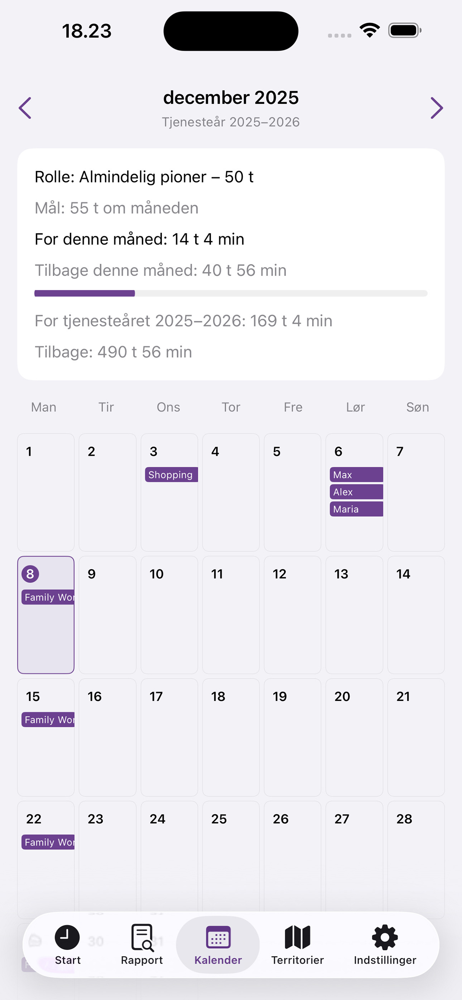
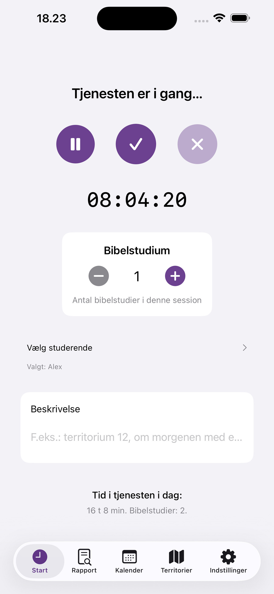
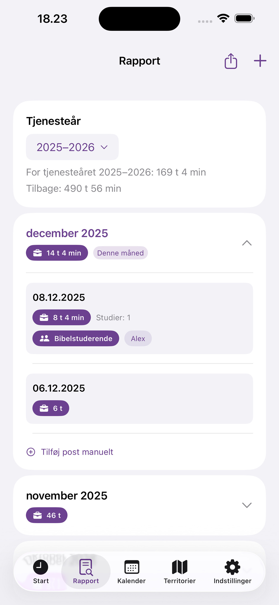
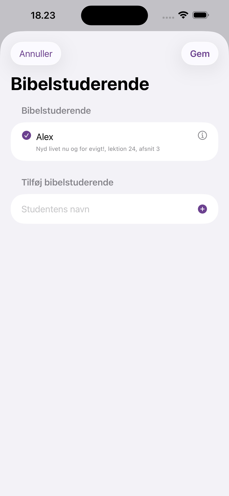
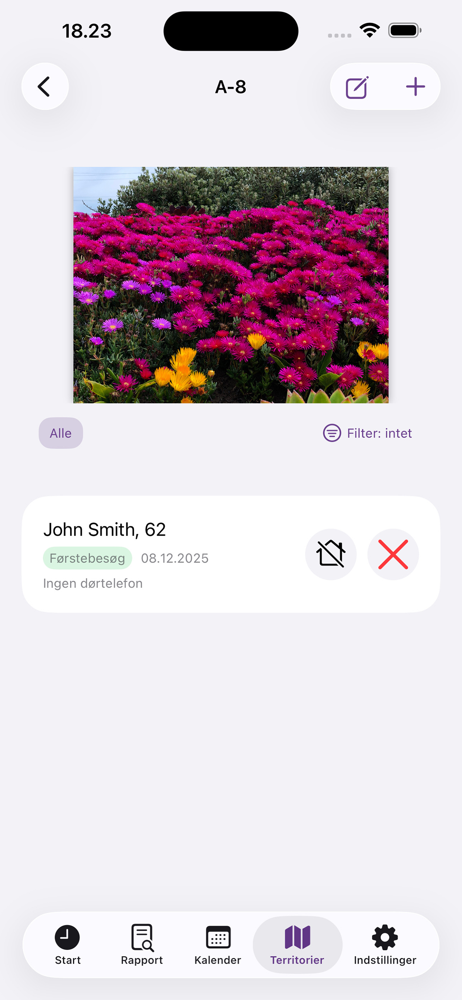
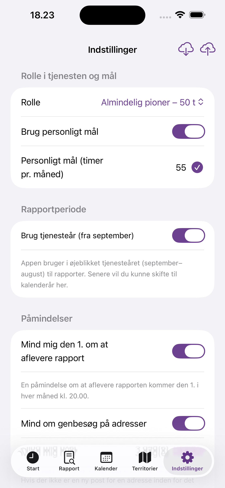
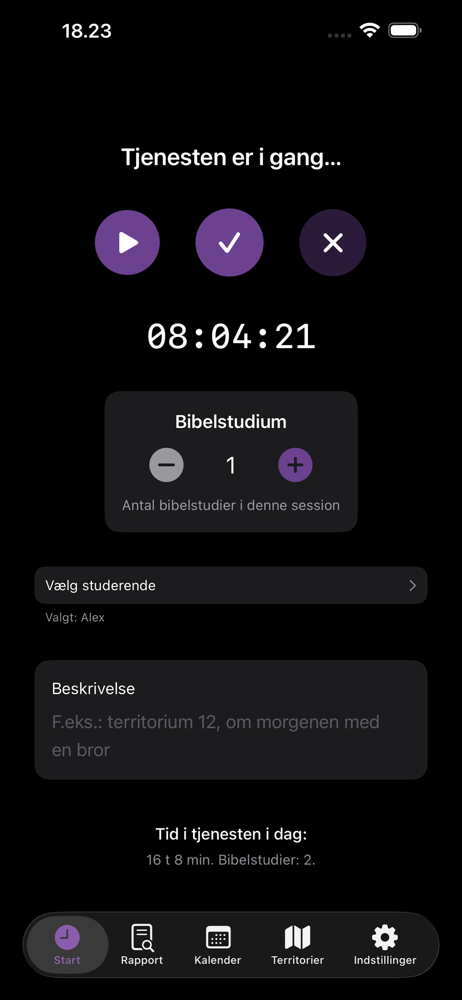
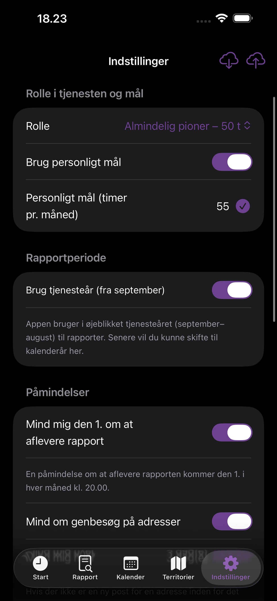

Din komplette hjælper til felttjenesten og pionertjenesten
JW Ministry er en felttjeneste-app til Jehovas Vidner på iPhone og iPad: stopur med Live Activities, oversigt over bibelstudieelever, tjenesteårsrapporter, timemål for pionerer og distriktskort.



Udforsk alle skærme i JW Ministry
Ægte skærmbilleder på dansk — fra tjenestetimer og bibelstudier til pionerkalender, distriktskort og OLED mørk tilstand.







Alt hvad du behøver til en organiseret felttjeneste
Bygget til forkyndere, hjælpepionerer, almindelige pionerer og specialpionerer.
Smart Timer, Widgets & Dynamic Island
Start timeren fra appen, hjemmeskærmswidget eller låseskærmen. Din aktive tid er altid synlig i Dynamic Island.
Bibelstudier & Lektionsfremskridt
Knyt bibelstudier direkte til dine rapportoptegnelser. Hold styr på hver elevs lektion i ”Et håb om en lys fremtid“.
Tjenesteroller & Personlige Timemål
Understøtter Forkynder, Hjælpepioner (15 eller 30 timer), Almindelig pioner (50 timer), Specialpioner (90 / 100 timer) samt eget månedsmål.
Tjenesteår (sept.–aug.) & Kalender
Planlæg tjenestemøder og Den Teokratiske Familieaften. Sammenlign planlagte og faktiske timer, og stryg en plan direkte over i rapporten.
Distrikter, Etageejendomme & Genbesøg
Opret distriktskort med fotos, 10 farver og lejlighedsgenerator efter opgange og etager. Søg efter adresse eller navn.
100% Lokal Privatlivsbeskyttelse & iCloud-backup
Ingen registrering og ingen eksterne servere. Alle data og fotos bliver lokalt på din iPhone/iPad.
Nyheder i version 1.8
- Automatisk sammentælling af planlagte timer i Kalenderen med dobbelt statuslinje (Planlagt vs. Faktisk).
- Konverter en planlagt tjenesteaftale i Kalenderen direkte til rapporten med ét swipe.
- Lynhurtig søgning efter adresse eller navn i alle distrikter samt 10 farvetemaer til distriktskort.
- Understøttelse af det kommende tjenesteår (2026–2027) under fanen Rapport.
- Fuld optimering til nyeste iOS & iPadOS og forbedret backup-sikkerhed.
Hvorfor forkyndere og pionerer vælger JW Ministry
Sammenligning af funktioner til tjenesterapport, pionerplanlægning og distrikter.
| Funktion | Papirnoter | Ældre Apps | JW Ministry 1.8 |
|---|---|---|---|
| Live-timer på låseskærmen & Dynamic Island | Nej | Nej | Ja (Live Activities) |
| Pionertimer (15, 30, 50 t.) & tjenesteår (600 t.) beregning | Manuelt | Delvist | Automatisk + Eget mål |
| Plan vs. Faktisk i Kalenderen & swipe til Rapport | Nej | Nej | Med ét swipe |
| Opgangs-/lejlighedsgenerator + Distriktsfotos & 10 farver | Papirsedler | Kun tekst | Visuelle kort + Søgning |
| Påmindelser om genbesøg & rapport den 1. i måneden | Nej | Simpel | Smarte iOS-notifikationer |
| 100% lokalt privatliv & fuld iCloud Drive-backup med fotos | Let at miste | Fejl ved skift af iPhone | 100% Offline & sikkert |
| Understøtter nyeste iOS, iPad, OLED mørk tilstand & 35+ sprog | — | Opdateres ikke | Moderne SwiftUI-design |
Skabt til Jehovas Vidners felttjeneste og pionertjeneste
Sådan hjælper JW Ministry forkyndere og pionerer gennem hele tjenesteåret.
Almindelige pionerer og specialpionerer (50, 90 & 100 timer / Tjenesteår 600 timer)
Hold nemt styr på månedsmålet på 50 timer og årsmålet på 600 timer fra september til august. Sæt et personligt mål (f.eks. 55 timer) og sammenlign planlagte timer med faktiske timer i Kalenderen.
- Automatisk status for 50 t./måned og 600 t. i tjenesteåret
- Personligt månedligt timemål (f.eks. 55 timer)
- Dobbelt statuslinje: planlagte vs. rapporterede timer
Hjælpepionerer (15 & 30 timer) og menighedsforkyndere
I kampagnemåneder eller omkring mindehøjtiden kan du skifte til Hjælpepioner (15 eller 30 timer) med ét tryk. Påmindelsen den 1. kl. 20:00 hjælper dig med at huske rapporten.
- Hurtigt skift til 15 eller 30 timers hjælpepionermål
- Del månedsrapporten med ét tryk
- Automatisk påmindelse den 1. i hver måned kl. 20:00
Fra-hus-til-hus distrikter, opgange & genbesøg
Opret digitale distriktskort med kortfoto, 10 farver og lejlighedsgenerator. Noter ”Ikke hjemme“ og søg hurtigt på navn eller vej.
- Lejlighedsgenerator efter opgang og etage
- Distriktsfotos, 10 farver og hurtig søgning på navn eller adresse
- Automatiske påmindelser om genbesøg
Bibelstudieoversigt & moderne erstatning for ServicePlanner / MyTime
Gem hver elevs aktuelle lektion i ”Et håb om en lys fremtid“. Bygget specielt til iPhone og iPad.
- Hold styr på lektioner i ”Et håb om en lys fremtid“
- Widgets, Dynamic Island og OLED mørk tilstand
- Moderne afløser for ServicePlanner og MyTime
Anmeldelser fra forkyndere og pionerer
Hvad brødre og søstre siger om at bruge JW Ministry i tjenesten.
“At kunne se summen af planlagte timer i Kalenderen ved siden af mine faktiske timer gør det så meget nemmere at holde min 50-timers plan.”
“Timeren på låseskærmen og muligheden for at swipe en plan fra Kalenderen direkte over i rapporten fungerer perfekt.”
“Opgangsgeneratoren og navnesøgningen i mine distriktskort har erstattet alle mine løse papirsedler.”
Fuldt oversat til over 35 sprog
Appen, widgets og notifikationer tilpasser sig automatisk sproget på din iPhone eller iPad:
Støt udviklingen af JW Ministry
JW Ministry er helt gratis og uden abonnementer. Hvis appen hjælper dig i tjenesten, kan du støtte fremtidige iOS-opdateringer og den årlige Apple Developer-licens:
Direkte krypto-overførsel (0% gebyr)
Direkte til udviklerens wallet:
TQQxYhThQGngj887Lvq9TnKtyyYMcUDFNw
UQBNBroTUyMG0YqgiHGXwVKO_rKe5d2y7gXqvICREjBwuKYk
Ofte stillede spørgsmål (FAQ)
Hvordan supplerer JW Ministry appen JW Library?
Mens JW Library bruges til bibellæsning, publikationer og møder, er JW Ministry skabt til din personlige felttjeneste: tidsregistrering, pionerplanlægning (15, 30, 50 t.), distriktsnoter og bibelstudier.
Hvor gemmes mine rapporter og distriktsnoter?
Udelukkende lokalt på din egen iPhone eller iPad. Ingen data sendes til eksterne servere.
Hvordan overfører jeg mine data til en ny iPhone?
Under Indstillinger trykker du på sky-ikonet øverst til højre for at eksportere en fuld sikkerhedskopi til iCloud Drive og gendanner den på din nye enhed.
Virker appen uden internet i forkyndelsen?
Ja, appen fungerer 100% offline uden mobildata eller Wi-Fi.